The first tab shows the overall role of WPF’s digital ink API, which allows you to incorporate painting functionality into a program easily. Of course, the application does not literally need to be a paining application; you can use this API for a wide variety of purposes, including capturing hand-writing input with a stylus for a TabletPC.
Begin by locating the node that represents the Ink API tab in your Objects and Timeline area and expand it. You should see that the default layout manager for this TabItem is a <Grid>. Right-click this and change it to a StackPanel (see Figure 28-29).
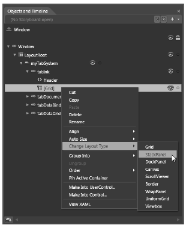Figure 28-29 Changing the layout manager
You can ensure that the StackPanel is the currently selected node in the Objects and Timeline editor by using the Assets Library to insert a new ToolBar control named inkToolbar. Next, select the inkToolbar node in the Objects and Timeline editor, locate the Layout section of the Properties window, and set the Height of the Toolbar control to 60 (leave the Width set to Auto).
Now find the Common Properties section of your Properties window and click the ellipse button for the Items (Collection) property (see Figure 28-30).
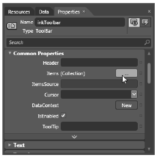Figure 28-30 The first step in adding controls to a ToolBar with the Blend Properties window
After you click this button, you are presented with a dialog box that allows you to select the controls you want to add to the ToolBar. Click the dropdown area of the Add another item button, then add three RadioButton controls (Figure 28-31).
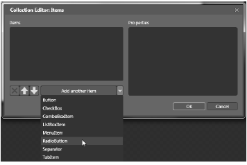Figure 28-31 Adding three RadioButtons to the ToolBar
You can use the embedded Properties editor of this dialog to give each RadioButton a Height of 50 and a Width of 100 (again, you can find these properties in the Layout area). Also, set the Content property (located in the Common Properties area) of each RadioButton to the values Ink Mode!, Erase Mode!, and Select Mode! (see Figure 28-32).
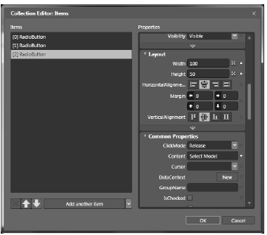Figure 28-32 Configuring each RadioButton
Once you add your three RadioButton controls, add a Separator control using the Add another item dropdown list. Now you need to add the final ComboBox (not ComboBoxItem) control; however, you will not see this control listed in the Add another item dropdown. When you need to insert non-standard controls using the Items (Collection) dialog, just click the Add another item area as if it were a push button. This opens the Select Object editor, where you can type in the name of the control you want (see Figure 28-33).
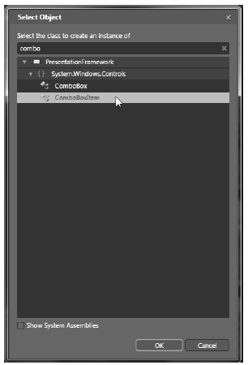Figure 28-33 Using the Select Object editor to add unique items to the Toolbar
Set the Width property of the ComboBox to 100 and add three ComboBoxItem objects to the ComboBox using the Items (Collection) property (again) in the Common Properties section of the property editor. Set the Content property of each ComboBoxItem to the strings Red, Green, and Blue.
Once you do this, close the editor to return to the window designer. The last task for this section is to use the Name property to assign variable names to your new items. Name your three RadioButton controls inkRadio, selectRadio, and eraseRadio. Also, name your ComboBox control comboColors.
Note As you built your toolbar using Blend, you might have thought to yourself how much quicker your task would be if you could simply edit the XAML by hand... and you’re right! You might remember that Expression Blend is targeted at graphical artists who might not feel comfortable manually entering markup or code. As a C# programmer, you can always use the integrated XAML editor of Blend as you work through these chapters; however, it is useful to know how to work within the IDE, especially when you need to explain how to use the tool to designers!
In this example, you want these three RadioButton controls to be mutually exclusive. In other GUI frameworks, ensuring that a group of related controls (such as radio buttons) were mutually exclusive required that you place them in the same group box. You don’t need to do this under WPF. Instead, you can simply assign them all to the same group name. This is helpful because the related items do not need to be physically collected in the same area, but can be anywhere in the window.
Do this by selecting each RadioButton on the designer (you can select all three using a Shift-Click operation), and then setting the GroupName property (located in the Common Properties area of the Properties window) to InkMode.
When a RadioButton control is not placed inside of a parent panel control, it will take on a UI identical to a Button control! However, unlike a Button, the RadioButton class includes an IsChecked property, which toggles between true and false when the end user clicks the UI element. Furthermore, RadioButton provides two events (Checked and Unchecked) that you can use to intercept this state change.
To configure your RadioButton controls to look like typical radio buttons, select each control on the designer using a Shift+Click operation, then right-click the selection and pick the Group Into ? Border menu option (see Figure 28-34).
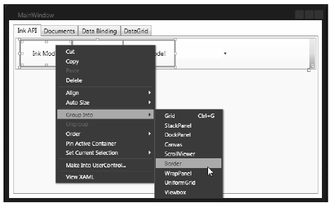Figure 28-34 Grouping items in a Border control
At this point, you’re ready to test the program, which you can do by pressing the F5 key. You should now see three mutually exclusive radio buttons and a combo box with three selections (see Figure 28- 35).
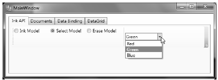Figure 28-35 The completed toolbar system
Before you finish the UI of your Ink API tab, you need to handle the Click event for each RadioButton control. Similar to Visual Studio, the Blend Properties window has a Lightning Bolt button to enter the names of event handlers (you can see it mounted next to the Name property). Use this tool to route the Click event for each button to the same handler, named RadioButtonClicked (see Figure 28-36).
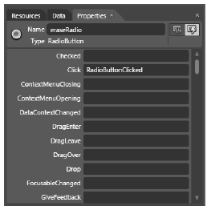Figure 28-36 Handling the Click event for each RadioButton
Doing this brings up the Blend code editor. Once you handle all three Click events, handle the SelectionChanged event of the ComboBox using a handler named ColorChanged. When you finish, you should have the following C# code:
public partial class MainWindow : Window { public MainWindow() { this.InitializeComponent(); // Insert code required on object creation below this point. } private void RadioButtonClicked(object sender, System.Windows.RoutedEventArgs e) { // TODO: Add event handler implementation here. } private void ColorChanged(object sender, System.Windows.Controls.SelectionChangedEventArgs e) { // TODO: Add event handler implementation here. } }
You will implement these handlers in a later step, so leave them empty for the time being.
To finish the UI of this tab, you need to place an InkCanvas control into the StackPanel, so it appears below the Toolbar you have just created. Select the StackPanel for the tabInk object in the Objects and Timeline editor, and then use the Assets Library to add an InkCanvas named myInkCanvas. Next, click the Selection tool on your Tools window (you can also press the V key on your keyboard as a shortcut) and stretch the ink canvas so it takes up a majority of the tab area.
Also, you might wish to use the Brushes editor to give your InkCanvas a unique background color (you’ll learn much more about the brush editor in the next chapter). Once you do this, run your program by pressing the F5 key. You will see the canvas is already able to draw data when you click-and-drag the left-mouse button (see Figure 28-37).
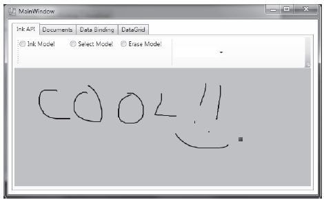Figure 28-37 The InkCanvas in action
The InkCanvas does more than draw mouse (or stylus) strokes; it also supports a number of unique editing modes, controlled by the EditingMode property. You can assign this property any value from the related InkCanvasEditingMode enumeration. For this example, you are interested in Ink mode, which is the default option you just witnessed; Select mode, which allows the user to select a region with the mouse to move or resize; and EraseByStoke, which will delete the previous mouse stroke.
Note A stroke is the rendering that takes place during a single mouse down/mouse up operation. The InkCanvas stores all strokes in a StrokeCollection object, which you can access using the Strokes property.
Update your RadioButtonClicked() hander with the following logic, which places the InkCanvas in the correct mode, based on the selected RadioButton:
private void RadioButtonClicked(object sender, System.Windows.RoutedEventArgs e) { // Based on which button sent the event, place the InkCanvas in a unique // mode of operation. switch((sender as RadioButton).Content.ToString()) { // These strings must be the same as the Content values for each // RadioButton. case "Ink Mode!": this.myInkCanvas.EditingMode = InkCanvasEditingMode.Ink; break; case "Erase Mode!": this.myInkCanvas.EditingMode = InkCanvasEditingMode.EraseByStroke; break; case "Select Mode!": this.myInkCanvas.EditingMode = InkCanvasEditingMode.Select; break; } }
Also, set the mode to Ink by default in the window’s constructor. And while you are at it, set a default selection for the ComboBox (more details on this control in the next section):
public MainWindow() { this.InitializeComponent(); // Be in Ink mode by default. this.myInkCanvas.EditingMode = InkCanvasEditingMode.Ink; this.inkRadio.IsChecked = true; this.comboColors.SelectedIndex=0; }
Now run your program again by pressing F5. Enter Ink mode and draw some data. Next, enter Erase mode and remove the previous mouse stroke you entered (you’ll notice the mouse icon automatically looks like an erasure). Finally, enter Select mode and select some strokes by using the mouse as a lasso. After you circle the item, you can move it around the canvas and resize its dimensions. Figure 28-38 shows your edit modes at work.
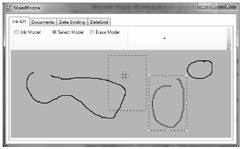Figure 28-38 The InkCanvas in action, with edit modes!
Once you populate a ComboBox control (or a ListBox), you have three ways to determine the selected item. First, if you wish to find the numerical index of the item selected, you can use the SelectedIndex property (which is zero-based; a value of -1 represents no selection). Second, if you wish to obtain the object within the list that has been selected, the SelectedItem property fits the bill. Third, the SelectedValue allows you to obtain the value of the selected object (typically obtained using a call to ToString()).
You need to add the last bit of code for this tab to change the color of the strokes entered on the InkCanvas. The DefaultDrawingAttributes property of InkCanvas returns a DrawingAttributes object that allows you to configure numerous aspect of the pen nib, including its size and color (among other settings). Update your C# code with this implementation of the ColorChanged() method:
private void ColorChanged(object sender, System.Windows.Controls.SelectionChangedEventArgs e) { // Get the selected value in the combo box. string colorToUse = (this.comboColors.SelectedItem as ComboBoxItem).Content.ToString(); // Change the color used to render the strokes. this.myInkCanvas.DefaultDrawingAttributes.Color = (Color)ColorConverter.ConvertFromString(colorToUse); }
Now recall that the ComboBox has a collection of ComboBoxItems. If you were to view the generated XAML, you’d see the following definition:
<ComboBox x:Name="comboColors" Width="100" SelectionChanged="ColorChanged"> <ComboBoxItem Content="Red"/> <ComboBoxItem Content="Green"/> <ComboBoxItem Content="Blue"/> </ComboBox>
When you call SelectedItem, you grab the selected ComboBoxItem, which is stored as a general Object. Once you cast the Object as a ComboBoxItem, you pluck out the value of the Content, which will be the string Red, Green, or Blue. This string is then converted to a Color object using the handy ColorConverter utility class. Now run your program again. You should be able to change between colors as you render your image.
Note that the ComboBox and ListBox controls can contain complex content as well, rather than a list of text data. You can get a sense of some of the things that are possible by opening the XAML editor for your window and changing the definition of your ComboBox so it contains a set of <StackPanel> elements, each of which contains an <Ellipse> and a <Label> (notice that the Width of the ComboBox is 200):
<ComboBox x:Name="comboColors" Width="200" SelectionChanged="ColorChanged"> <StackPanel Orientation ="Horizontal" Tag="Red"> <Ellipse Fill ="Red" Height ="50" Width ="50"/> <Label FontSize ="20" HorizontalAlignment="Center" VerticalAlignment="Center" Content="Red"/> <StackPanel> <StackPanel Orientation ="Horizontal" Tag="Green"> <Ellipse Fill ="Green" Height ="50" Width ="50"/> <Label FontSize ="20" HorizontalAlignment="Center" VerticalAlignment="Center" Content="Green"/> </StackPanel> <StackPanel Orientation ="Horizontal" Tag="Blue"> <Ellipse Fill ="Blue" Height ="50" Width ="50"/> <Label FontSize ="20" HorizontalAlignment="Center" VerticalAlignment="Center" Content="Blue"/> </StackPanel> </ComboBox>
Notice that each StackPanel assigns a value to its Tag property, which is a simple, fast, and convenient way to discover which stack of items has been selected by the user (there are better ways to do this, but this will do for now). With this adjustment, you need to change the implementation of your ColorChanged() method, like this:
private void ColorChanged(object sender, System.Windows.Controls.SelectionChangedEventArgs e) { // Get the Tag of the selected StackPanel. string colorToUse = (this.comboColors.SelectedItem as StackPanel).Tag.ToString(); ... }
Now run your program again and take note of your unique ComboBox (see Figure 28-39).
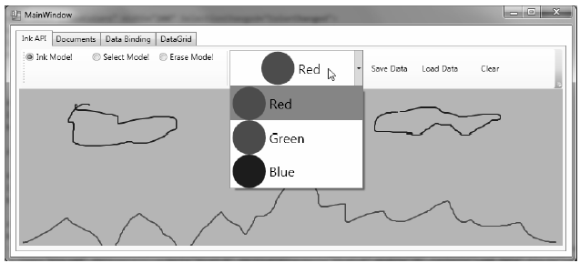Figure 28-39 A custom ComboBox, thanks to the WPF content model
The last part of this tab will enable you to save and load your canvas data, as well as clear it of all content. At this point in the chapter, you might feel a bit more comfortable designing a UI with Blend, so the instructions will be short and sweet.
Begin by importing the System.IO and System.Windows.Ink namespaces to your code file. Now add three more Button controls to your ToolBar named btnSave, btnLoad, and btnClear. Next, handle the Click event for each control, then Implement the handlers, like this:
private void SaveData(object sender, System.Windows.RoutedEventArgs e) { // Save all data on the InkCanvas to a local file. using (FileStream fs = new FileStream("StrokeData.bin", FileMode.Create)) { this.myInkCanvas.Strokes.Save(fs); fs.Close(); } } private void LoadData(object sender, System.Windows.RoutedEventArgs e) { // Fill StrokeCollection from file. using(FileStream fs = new FileStream("StrokeData.bin", FileMode.Open, FileAccess.Read)) { StrokeCollection strokes = new StrokeCollection(fs); this.myInkCanvas.Strokes = strokes; } } private void Clear(object sender, System.Windows.RoutedEventArgs e) { // Clear all strokes. this.myInkCanvas.Strokes.Clear(); }
You should now be able to save your data to a file, load it from the file, and clear the InkCanvas of all data. That wraps up the first tab of the TabControl, as well as your examination of the WPF digital Ink API. To be sure, there is more to say about this technology; however, you should be in a good position to dig into the topic further if that interests you. Next, you will learn how to use the WPF Documents API.